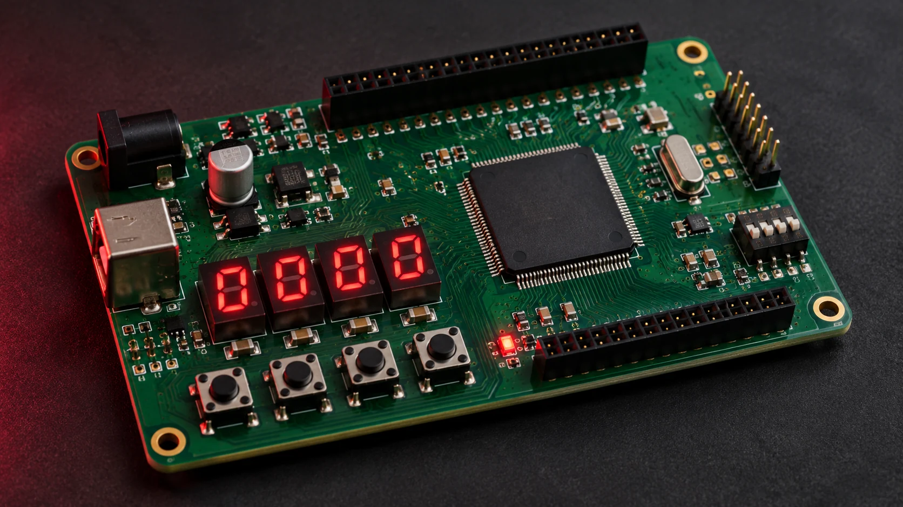
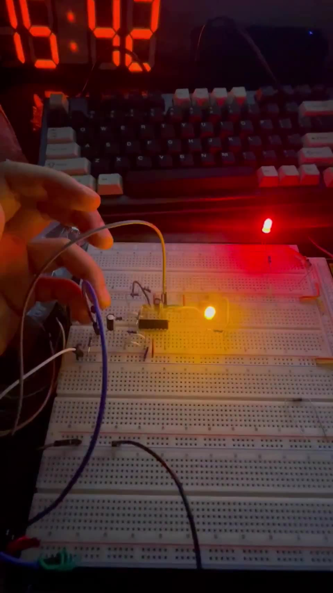

SELECTED ENGINEERING WORK
ENGINEERING
PROJECTS.
Six builds. Six deeper looks at design decisions, circuit work, source code, measurements, and what I learned.
 VIEW CASE STUDY ↗
VIEW CASE STUDY ↗AEROSPACE / CAD
Rocket design & testing
CAD modeling, stability studies, prototyping and launch with Purdue Space Program.
 VIEW CASE STUDY ↗
VIEW CASE STUDY ↗ANALOG ELECTRONICS / AUDIO
Three-band audio equalizer
A complete analog signal chain, designed, measured, debugged and improved.

ILLUSTRATIVE BOARD IMAGEVIEW CASE STUDY ↗DIGITAL DESIGN / SYSTEMVERILOG
FPGA Lunar Lander
A modular game implemented in RTL with custom arithmetic, state and display logic.

VIEW CASE STUDY ↗INSTRUMENTATION / ANALOG
Optical heart-rate sensor
Infrared sensing, signal conditioning and a comparator-driven output.
 VIEW CASE STUDY ↗
VIEW CASE STUDY ↗ANALOG CIRCUIT DESIGN / LAB 6
Discrete MOSFET op-amp
Built a multistage CMOS operational amplifier from transistor-level components.
 VIEW CASE STUDY ↗
VIEW CASE STUDY ↗SOFTWARE / SYSTEMS
Inventory management in C
A command-line application using dynamic data structures and file persistence.